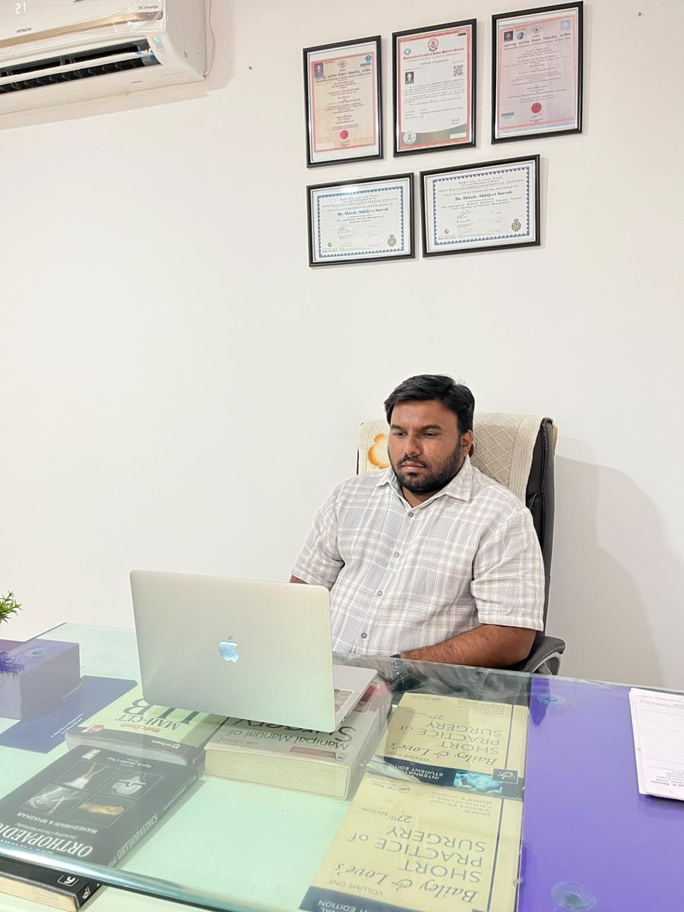

Internal piles
Sit above the line where the anal canal meets the skin. Often painless; bright red bleeding is the common sign.
In short: Piles (haemorrhoids) are swollen blood vessels in the lower rectum and anal canal. Many early piles improve with food, fluid and medicine changes. Advanced or persistent piles may need a procedure such as banding, laser or surgery. After a private examination, we explain the right option for your grade.
Led by Dr. Abhijeet Suresh Shinde, Consultant Surgeon. MS (General Surgery), Diploma in Laser Proctology.
Piles are cushions of tissue and blood vessels in the lower rectum and anal canal. Everyone has them, and they help with bowel movements. They turn into a problem when they swell, slip down, cause bleeding, itching or a lump.
Piles are very common. Straining on the toilet, long sitting hours, low-fibre food and pregnancy all raise the chance. The good news: most piles can be controlled, and many need no operation.
Sit inside the anal canal. Usually painless, but can bleed bright red blood during or after stools.
Sit under the skin around the anus. They can itch, feel sore and swell, and cause pain when a clot forms.
Piles look and feel quite different from person to person. Knowing the type helps us choose the right treatment.
Sit above the line where the anal canal meets the skin. Often painless; bright red bleeding is the common sign.
Sit under the skin around the anus. Can itch, ache and make cleaning difficult.
A blood clot forms inside a pile. Sudden, firm, painful lump that looks bluish.
Piles that come down outside the anus, either on straining or all the time.
Do not assume all bleeding is piles. Persistent bleeding, a change in bowel habit, weight loss or a dark, tarry stool needs a proper examination, and sometimes a colonoscopy, to rule out other causes.
These conditions overlap and can sit together. This comparison gives a rough idea; only an examination can confirm which one you have.
Still not sure which one it is? Symptoms overlap, and only an examination can confirm the cause.
Book a ConsultationPiles develop when pressure in the lower rectum stays high for long periods. Several everyday habits add up together.
Many patients we see in Kharadi have long desk hours at IT parks, irregular meals and little water, which makes stools harder and straining more likely.
Diagnosis is simple, quick and done in privacy. You are told what is being done at each step.
Symptoms, bowel habits, diet, medicines and past illnesses.
A careful look at the area around the anus for swelling or skin changes.
A gentle digital examination to feel for lumps, tenderness or other problems.
A short look inside the canal with a small tube to see and grade the piles.
A colonoscopy is advised when bleeding is unexplained, you are above 45, or there is a family history of bowel disease.
The choice between non-surgical care and surgery depends mainly on the grade, your symptoms and your health. This table is a guide, not a prescription.
| Grade | Usual first approach | When a procedure may be considered |
|---|---|---|
| Grade 1 | Diet, fibre, water, medicines | Bleeding continues despite treatment |
| Grade 2 | Non-surgical care, banding or injection | Symptoms return or banding is not enough |
| Grade 3 | Procedure usually discussed | Laser, stapler or surgical removal, depending on the piles |
| Grade 4 | Surgical treatment is commonly needed | Haemorrhoidectomy, based on the findings |
Many people never need an operation. Non-surgical piles treatment works best for grade 1 and 2 piles, and for flare-ups in more advanced piles. Dr. Shinde starts here whenever it is safe and sensible.

Small daily changes make a big difference to non-surgical piles treatment, and they also lower the chance of piles returning after treatment or surgery.
Increase fibre slowly, with extra water, to avoid gas and bloating.

Surgery is advised when piles are large, prolapsed, keep bleeding, or do not settle with other care. Today, most procedures are done as a day-care or short-stay operation.
| Option | Suited to | Things to know |
|---|---|---|
| Rubber-band ligation | Selected internal piles, commonly grade 2 to 3 | Quick; may need repeat sessions |
| Haemorrhoidectomy (open) | Large, prolapsing or grade 3 to 4 piles with external component | Most definitive; usually more recovery discomfort |
| Stapled haemorrhoidopexy | Selected grade 3 to 4 prolapsing piles | Less pain early; a few may return later |
Laser treatment uses focused energy delivered through a thin fibre to shrink selected internal piles, leaving healthy tissue in place. Dr. Shinde holds a Diploma in Laser Proctology and offers laser where it suits the patient.
We explain what laser can and cannot do, and we never recommend it just because it is newer.
Private discussion and examination.
Proctoscopy and grading of the piles.
Non-surgical, laser or surgery explained.
Done as day-care where possible.
Recovery checks and diet guidance.
Recovery depends on the procedure and the person. Minimally invasive options usually allow a quicker return to routine than a conventional haemorrhoidectomy. Your surgeon gives an estimate for your treatment, and you can reach our Kharadi clinic if anything worries you.

Call us for heavy bleeding, fever, severe pain, passing urine problems, or if you cannot pass stools. Do not wait for your next appointment.
Call NowA high-fibre diet with plenty of fluids keeps stools soft.
Go when you feel the urge. Do not push hard.
Avoid sitting for long periods or using a phone on the toilet.
Walk often and break long hours of sitting.
Fix hard stools before they become a habit.
Most piles are not dangerous, but ignoring them lets treatment become harder and more invasive. These are the common risks of leaving piles alone for long.
Slow, repeated bleeding over months can lower haemoglobin and cause weakness.
A thrombosed pile is very painful and may need drainage or removal.
Piles that stay outside can swell, become sore and hard to push back.
Bleeding blamed on piles can hide fissure, fistula or bowel disease.
Piles affect men and women of all adult ages, and are very common in pregnancy and after childbirth.
Creams ease symptoms but do not remove the cause. Long steroid use can thin the skin.
Most procedures are done as day-care, and many patients go home the same day.
They do not. But bleeding should be examined so that other conditions are not missed.
Click “Know more” on a card to see the fact.
There is no single price for piles treatment in Kharadi. Your surgeon explains the likely cost after examination, once the grade and best treatment are clear. Cost is explained before you decide, not after.
Consult Dr. Abhijeet Suresh Shinde for piles treatment at DISHA Advanced Surgical & Laser Piles Clinic.
MS (General Surgery), Diploma in Laser Proctology, and specialised training in laser piles care.
A track record in clinical and surgical experience.
We say when surgery is not needed, and we explain every option.
A calm clinic near Manipal Hospital, Thite Nagar, Kharadi.
Explained after examination and before you decide.

What patients have written about their visit to our clinic in Kharadi, Pune, shown as posted on Google.

DISHA Advanced Surgical & Laser Piles Clinic
1st Floor, OPD No. 2, Survey No. 22/2, Ganga Altus, F Building, Cherry Life, Near Manipal Hospital, Thite Nagar, Kharadi, Pune 411014
Daily: 10:00 AM – 9:00 PM
There is no single best treatment. It depends on the grade, your symptoms and your health. Early piles often improve with diet, water and medicines, while advanced piles may need banding, laser or surgery.
Yes. Grade 1 and 2 piles are usually managed with fibre, fluids, medicines, sitz baths and sometimes banding or injection. Surgery is advised only when these are not enough.
When piles are large, keep prolapsing, bleed repeatedly, form painful clots, or do not respond to other care. Grade 3 and 4 piles often need a procedure.
Most procedures are done as day-care or a short stay. Some discomfort after surgery is expected, and we give pain relief and clear aftercare advice. Pain level depends on the procedure.
Laser can offer a more comfortable recovery for suitable internal piles, but it is not right for everyone. We recommend the method that fits your grade, not the newest one.
It varies. Minimally invasive options usually allow a quicker return to routine than open surgery. Your surgeon will give an estimate based on your procedure.
Yes, if the causes continue. Fibre, water, active habits and avoiding straining lower the chance considerably.
No. Bleeding can also come from fissure, fistula or bowel conditions, so it should be examined and not self-treated for long.
No, piles do not become cancer. However, bleeding can have other causes, which is why proper examination matters.
Yes. Pressure and constipation during pregnancy make piles common. Most settle after delivery with simple measures. Please consult before using any medicine.
Call or WhatsApp +91 97668 15782, or use the online booking form. The clinic is open daily from 10 AM to 9 PM.
Cost depends on the treatment chosen. Your surgeon explains the likely cost after examination.
A short, private consultation with Dr. Abhijeet Suresh Shinde in Kharadi, Pune.
This page is general information and does not replace a personal medical opinion. Treatment decisions are made after examination.